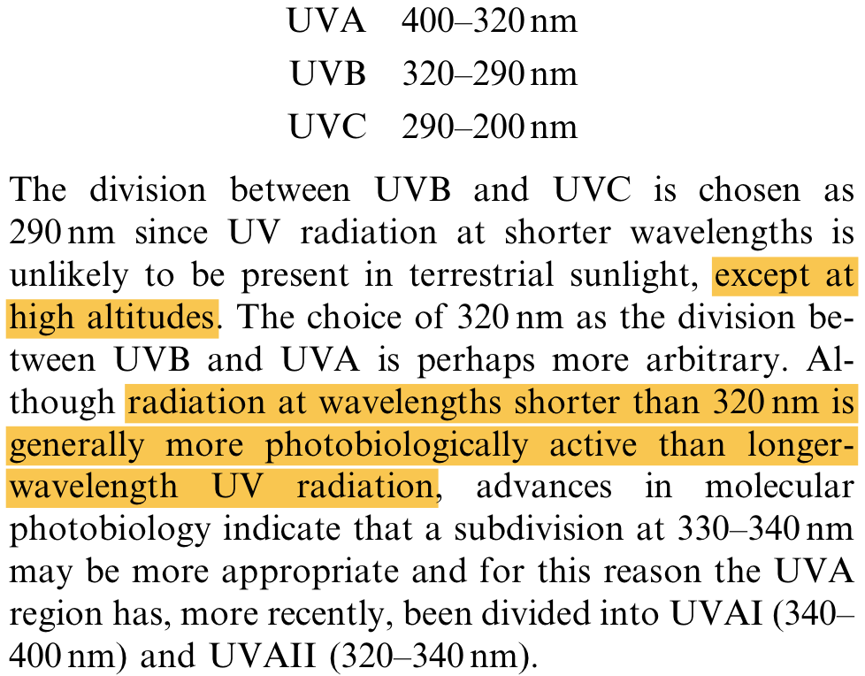
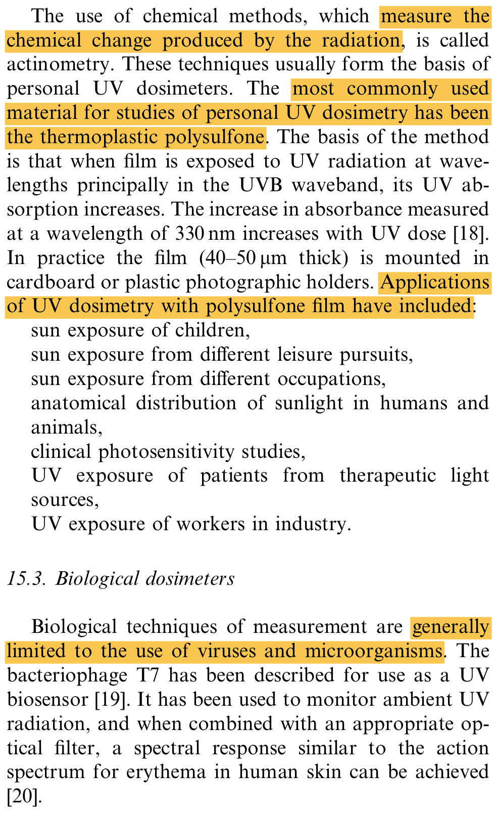
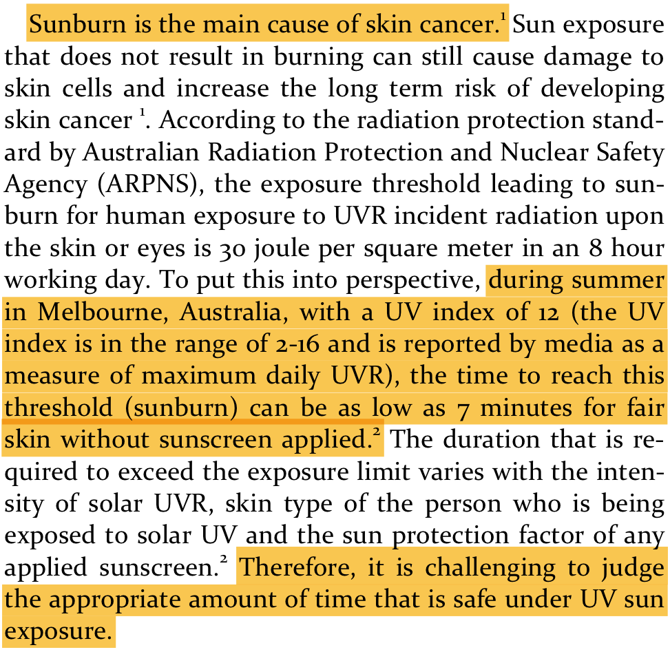
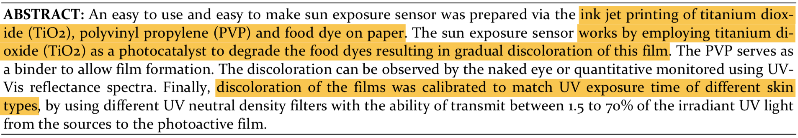
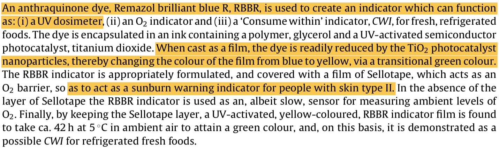
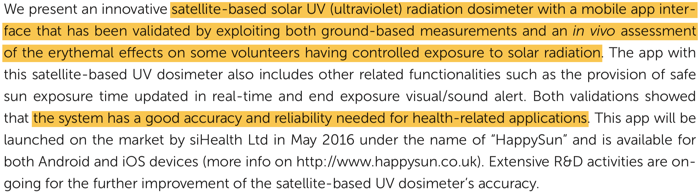
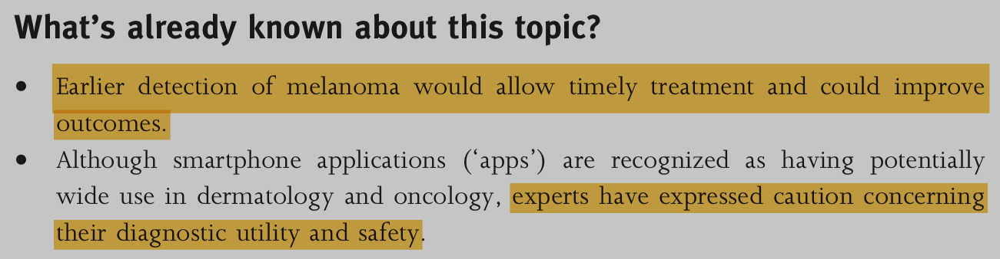
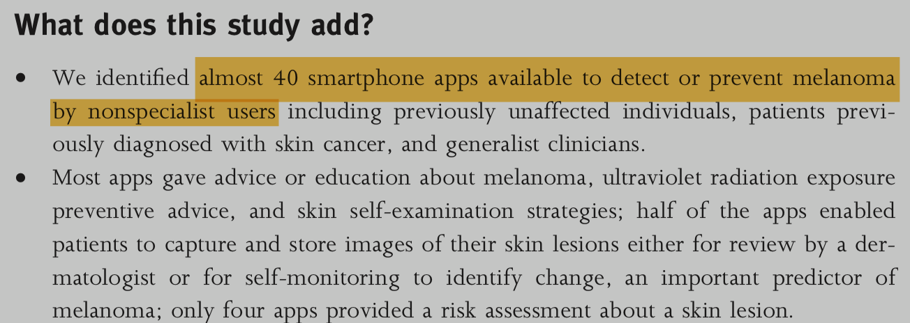
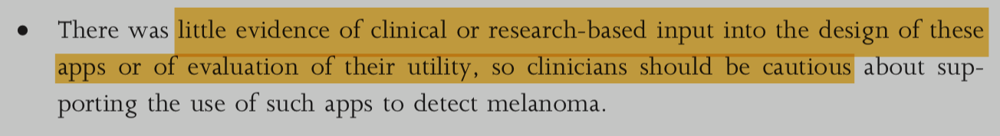

UV Detection Jewelry
Multi-purpose jewelry that monitors and displays UV exposure for sunburn and skin cancer prevention.
General Comments
I think the key for your project is going to be justifying that your product will be somehow better than existing technologies (which doesn’t need to mean that it works better — maybe it just appeals more to your target market than other products). UV-sensitive plastics, like these beads, are a cost-effective and simple method for reporting UV exposure to the user, but frankly, they’re kind of tacky. On the opposite end of the spectrum, wearable devices with smartphone apps set the current bar for style and function (here is that company’s patent, if you’re interested). For more examples of wearable UV exposure monitors, check out this page.
UV Radiation (2002)
First off, you should have a strong understanding of the problem. UV rays can cause DNA damage, which eventually can cause cancer. You’re planning on measuring UV exposure and reporting it to the user, so you should be able to explain who you want to measure, what you’re measuring, and how you’re going to measure it.
“Sources and measurement of ultraviolet radiation.” Diffey. Academic Press Methods. 2002. [.pdf]

Existing Technologies (2016)
Other than the plastic beads and the wearable device (“Ultra”) mentioned above, there are a ton of ways to monitor sun exposure in both single and multi-use systems.
“A Paper Based Sensor for Monitoring Sun Exposure.” Khiabani et al. ACS Sensors. 2016. [.pdf]


So, you can use a single-use, degradable, paper-based system to monitor UV exposure, but that’s not really what you guys are trying to do (although it could be a low-cost alternative that you offer). Why might this option not be as good as a permanent solution like your jewelry? I also think that this paper makes a good point about different skin types (check out the Fitzpatrick skin scale).
“Multifunctional anthraquinone-based sensors: UV, O2 and time.” Khankaewa et al. Sensors and Actuators. 2016. [.pdf]

Again, this isn’t reusable, but it’s a good chemical indicator. You might also notice that they specify that this technology is for Fitzpatrick skin type II, which is a good reminder that not all measurement techniques are accurate between different ethnicities.
“Validation and in vivo assessment of an innovative satellite-based solar UV dosimeter for a mobile app dedicated to skin health.” Morelli et al. Photochemical & Photobiological Sciences. 2016. [.pdf]

This is a really neat idea, and this company appears to be viable and growing based on their website (they recently posted job listings, but their app isn’t available on the Apple app store). Perhaps you could include a similar feature in the app if your user forgets their wearable device?
There’s also an important lesson here. If we turn to the literature, we’ll find this article:
“Smartphone applications for melanoma detection by community, patient and generalist clinician users: a review.” Kassianos et al. British Journal of Dermatology. 2015. [.pdf]

So, maybe this idea doesn’t actually work as well as it claims because it fails to incorporate physician advice or some other element like risk assessment.
Finally, you might use some combination of different technologies (or, as I’ve mentioned, have products at different price points, since these options are largely single-use disposables), like this chemical